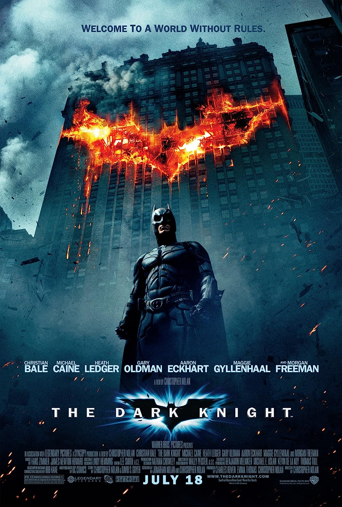
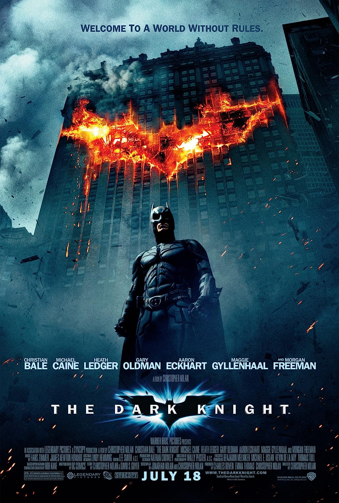

Título: Inception
Duración: 148 minutos
Género: Ciencia ficcion
Actores: Leonardo DiCaprio, Cillian Murphy, Joseph Gordon-Levitt, Tom Hardy.
Dom Cobb es un ladrón con una extraña habilidad para entrar a los sueños de la gente y robarles los secretos de sus subconscientes. Su habilidad lo ha vuelto muy popular en el mundo del espionaje corporativo, pero ha tenido un gran costo en la gente que ama. Cobb obtiene la oportunidad de redimirse cuando recibe una tarea imposible: plantar una idea en la mente de una persona. Si tiene éxito, será el crimen perfecto, pero un enemigo se anticipa a sus movimientos
Similares


 
